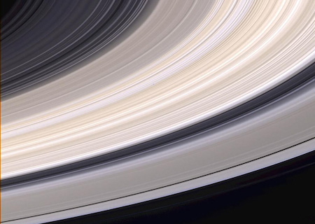

Saturn
Structure and Surface
- Saturn is a gas giant like Jupiter. It is made mostly of hydrogen and helium.
- Saturn has a thick atmosphere.
- Saturn has a lovely set of seven main rings with spaces between them.
Time on Saturn
- One day on Saturn goes by in just 10.7 hours.
- One year on Saturn is the same as 29 Earth years.
Saturn's Neighbors
- Saturn has 145 moons that we know of so far.
- Saturn is the sixth planet from the Sun. That means Jupiter and Uranus are Saturn’s neighboring planets.
Quick History
- Saturn has been known since ancient times because it can be seen without advanced telescopes.
- Four robotic spacecraft have visited Saturn, including Pioneer 11, Cassini, and Voyager 1 and 2.
What does Saturn look like?
The Cassini spacecraft took this picture of Saturn's rings. You can see the grey and tan colors.

This is a picture of Saturn and its moons Tethys and Dione. Voyager 1 took this picture as it passed by.

NASA's Cassini spacecraft went behind Saturn and took this picture in 2013. You can see seven of its moons and its inner rings. In the background you can also see Earth.

A portrait looking down on Saturn and its rings. This picture was made from images taken by NASA's Cassini spacecraft in 2013. It was put together by amateur image processor and Cassini fan Gordan Ugarkovic.